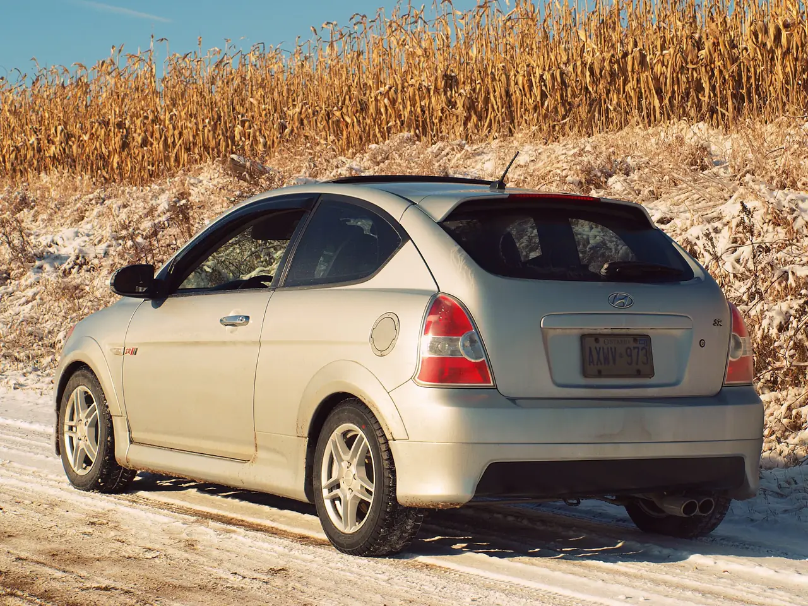

Werkgebied: heel Nederland
Wij komen naar u toe in alle 342 gemeenten van Nederland. Kies uw provincie of gemeente voor de woonplaatsen en de buurgemeenten bij u in de buurt.
Gelderland
- Aalten
- Apeldoorn
- Arnhem
- Barneveld
- Berg en Dal
- Berkelland
- Beuningen
- Bronckhorst
- Brummen
- Buren
- Culemborg
- Doesburg
- Doetinchem
- Druten
- Duiven
- Ede
- Elburg
- Epe
- Ermelo
- Harderwijk
- Hattem
- Heerde
- Heumen
- Lingewaard
- Lochem
- Maasdriel
- Montferland
- Neder-Betuwe
- Nijkerk
- Nijmegen
- Nunspeet
- Oldebroek
- Oost Gelre
- Oude IJsselstreek
- Overbetuwe
- Putten
- Renkum
- Rheden
- Rozendaal
- Scherpenzeel
- Tiel
- Voorst
- Wageningen
- West Betuwe
- West Maas en Waal
- Westervoort
- Wijchen
- Winterswijk
- Zaltbommel
- Zevenaar
- Zutphen
Limburg
- Beek
- Beekdaelen
- Beesel
- Bergen (Limburg)
- Brunssum
- Echt-Susteren
- Eijsden-Margraten
- Gennep
- Gulpen-Wittem
- Heerlen
- Horst aan de Maas
- Kerkrade
- Landgraaf
- Leudal
- Maasgouw
- Maastricht
- Meerssen
- Mook en Middelaar
- Nederweert
- Peel en Maas
- Roerdalen
- Roermond
- Simpelveld
- Sittard-Geleen
- Stein
- Vaals
- Valkenburg aan de Geul
- Venlo
- Venray
- Voerendaal
- Weert
Noord-Brabant
- 's-Hertogenbosch
- Alphen-Chaam
- Altena
- Asten
- Baarle-Nassau
- Bergeijk
- Bergen op Zoom
- Bernheze
- Best
- Bladel
- Boekel
- Boxtel
- Breda
- Cranendonck
- Deurne
- Dongen
- Drimmelen
- Eersel
- Eindhoven
- Etten-Leur
- Geertruidenberg
- Geldrop-Mierlo
- Gemert-Bakel
- Gilze en Rijen
- Goirle
- Halderberge
- Heeze-Leende
- Helmond
- Heusden
- Hilvarenbeek
- Laarbeek
- Land van Cuijk
- Loon op Zand
- Maashorst
- Meierijstad
- Moerdijk
- Nuenen, Gerwen en Nederwetten
- Oirschot
- Oisterwijk
- Oosterhout
- Oss
- Reusel-De Mierden
- Roosendaal
- Rucphen
- Sint-Michielsgestel
- Someren
- Son en Breugel
- Steenbergen
- Tilburg
- Valkenswaard
- Veldhoven
- Vught
- Waalre
- Waalwijk
- Woensdrecht
- Zundert
Noord-Holland
- Aalsmeer
- Alkmaar
- Amstelveen
- Amsterdam
- Bergen (Noord-Holland)
- Beverwijk
- Blaricum
- Bloemendaal
- Castricum
- Den Helder
- Diemen
- Dijk en Waard
- Drechterland
- Edam-Volendam
- Enkhuizen
- Gooise Meren
- Haarlem
- Haarlemmermeer
- Heemskerk
- Heemstede
- Heiloo
- Hilversum
- Hollands Kroon
- Hoorn
- Huizen
- Koggenland
- Landsmeer
- Laren
- Medemblik
- Oostzaan
- Opmeer
- Ouder-Amstel
- Purmerend
- Schagen
- Stede Broec
- Texel
- Uitgeest
- Uithoorn
- Velsen
- Waterland
- Wijdemeren
- Wormerland
- Zaanstad
- Zandvoort
Zuid-Holland
- Alblasserdam
- Albrandswaard
- Alphen aan den Rijn
- Barendrecht
- Bodegraven-Reeuwijk
- Capelle aan den IJssel
- Delft
- Den Haag
- Dordrecht
- Goeree-Overflakkee
- Gorinchem
- Gouda
- Hardinxveld-Giessendam
- Hendrik-Ido-Ambacht
- Hillegom
- Hoeksche Waard
- Kaag en Braassem
- Katwijk
- Krimpen aan den IJssel
- Krimpenerwaard
- Lansingerland
- Leiden
- Leiderdorp
- Leidschendam-Voorburg
- Lisse
- Maassluis
- Midden-Delfland
- Molenlanden
- Nieuwkoop
- Nissewaard
- Noordwijk
- Oegstgeest
- Papendrecht
- Pijnacker-Nootdorp
- Ridderkerk
- Rijswijk
- Rotterdam
- Schiedam
- Sliedrecht
- Teylingen
- Vlaardingen
- Voorne aan Zee
- Voorschoten
- Waddinxveen
- Wassenaar
- Westland
- Zoetermeer
- Zoeterwoude
- Zuidplas
- Zwijndrecht
Lekke band of nieuwe banden nodig?
Bel of app ons direct. We zeggen eerlijk wanneer we er kunnen zijn en wat het kost.